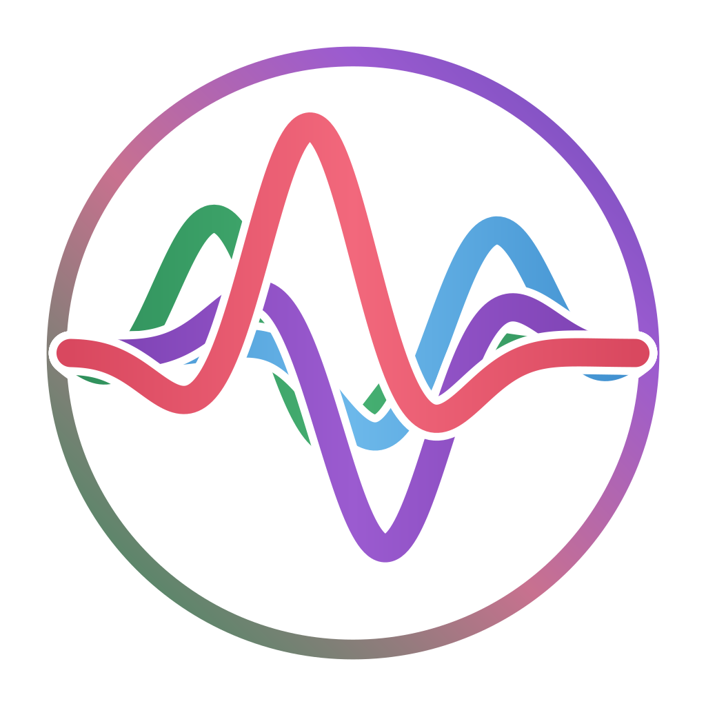

재생에 맞춰 넘어가는 싱크 가사
지금 부르는 줄을 크게, 앞뒤 줄은 흐리게. 가사 줄을 누르면 그 부분으로 바로 이동하고, 가사가 빠르거나 늦으면 ↑ ↓ 키로 맞출 수 있어요.

Linea무료 · 오픈소스 · macOS & Windows
Linea는 유튜브 뮤직에서 재생 중인 곡의 싱크 가사를 화면 위에 띄워 주는 데스크톱 위젯이에요. 외국어 가사는 한국어 번역과 함께, 전체화면에서는 뮤직비디오와 함께.
최신 버전 · macOS (Apple Silicon M1 이상) · Windows 10/11 (x64) · 모든 파일 보기
위 화면은 직접 눌러 볼 수 있는 데모예요. 재생 · 이전/다음 곡, 진행 바, 가사 줄, 번역(文가), 가사 창, 소리, 앨범 아트를 눌러 보세요. 오른쪽 아래 LP 위젯도 같이 움직여요. 곡 · 가사 · 영상 · 음악은 모두 데모용으로 만든 예시예요.
기능
유튜브 뮤직은 평소처럼 듣고, 가사는 Linea가 챙겨요.
지금 부르는 줄을 크게, 앞뒤 줄은 흐리게. 가사 줄을 누르면 그 부분으로 바로 이동하고, 가사가 빠르거나 늦으면 ↑ ↓ 키로 맞출 수 있어요.
외국어 가사 아래에 한국어 번역이 붙어요. NVIDIA 무료 AI 키를 넣으면 곡 전체의 흐름과 말투를 살린 번역으로 바뀌어요.
전체화면에서 앨범 아트를 누르면 유튜브 뮤직과 연결된 영상이 재생 위치에 맞춰 나와요. 배경은 그 영상을 흐리게.
lrclib부터 Apple Music · NetEase · QQ Music, 유튜브 자막까지 차례로 찾아요. 커버 영상도 원곡을 찾아 가사를 띄워요.
소리에 반응하는 이퀄라이저, 앨범 아트 색이 물감처럼 섞이는 배경.
작업하면서는 화면 아래의 가는 바로, 책상 위 소품처럼은 돌아가는 LP 위젯으로, 집중해서 들을 때는 전체화면으로. 위젯은 항상 다른 창 위에 떠 있고, 끌어서 옮길 수 있어요.
재생 · 일시정지, 이전 · 다음 곡, 구간 이동, 볼륨까지. 소리는 부드럽게 줄었다 커져요.
위젯과 브라우저는 로컬(127.0.0.1)에서만 통신해요. 계정 정보는 다루지 않아요.
설치
위젯은 유튜브 뮤직의 재생 정보를 받아 가사를 띄워요. 그 정보를 어디서 보내느냐에 따라 방식이 나뉘어요.
macOS는 dmg를 열어 Linea를 응용 프로그램 폴더로 끌어다 놓고 실행하세요. 처음 실행할 때 경고가 뜨면 첫 실행 경고 해결을 보세요.
아직 크롬 웹 스토어 등록 전이라 직접 불러와요. 풀린 폴더는 지우지 말고 그대로 두세요.
확장 프로그램 관리 화면을 열고 개발자 모드를 켠 뒤, 압축해제된 확장 프로그램을 로드합니다를 눌러 풀어 둔
폴더(manifest.json이 있는 폴더)를 고르세요.
Chrome · Edge · Whale 등 크롬 계열(111 이상)에서 동작해요. "로컬 네트워크 접근" 허용을 물으면 허용해 주세요.
music.youtube.com을 열거나 새로고침하고 곡을 재생하세요. 위젯에 곡 제목과 가사가 나타나면 끝이에요.
크롬 계열 브라우저에 Tampermonkey를 설치하세요. Chrome · Edge는 확장 프로그램 관리 화면에서 Tampermonkey 세부정보 → 사용자 스크립트 허용을 켜야 해요 (메뉴가 없으면 개발자 모드를 먼저 켜세요).
Tampermonkey 아이콘 → 새 스크립트 만들기를 누르고, 기본 내용을 모두 지운 뒤 tampermonkey.js 내용을 전부 붙여 넣고 저장(⌘S / Ctrl+S)하세요.
music.youtube.com을 새로고침하고 곡을 재생하면 위젯에 가사가 나타나요.
A와 B는 하는 일이 같아요. 둘 다 켜 두면 재생 정보가 두 번 보내지니 하나만 켜 주세요.
브라우저 · 확장 프로그램 · Tampermonkey가 필요 없어요. Linea가 켜져 있으면 먼저 종료하세요 (둘은 같이 실행할 수 없어요).
앱을 실행하면 위젯과 함께 유튜브 뮤직 창이 열려요. 오른쪽 위 로그인으로 구글 계정에 로그인하세요. 처음 한 번만 하면 돼요.
구글은 앱 안 브라우저의 로그인을 막기 때문에, Linea Player는 구글 로그인 페이지에서만 파이어폭스처럼 접속해요. 이 방식이 꺼려지면 A나 B를 쓰세요.
유튜브 뮤직 창에서 곡을 재생하면 위젯에 가사가 나타나요. 창을 닫아도 음악은 계속 나오고, 트레이 아이콘 → 유튜브 뮤직 열기로 다시 열 수 있어요.
앱이 Apple 공증을 받지 않아 경고가 뜰 수 있어요.
"확인되지 않은 개발자" → 시스템 설정 → 개인정보 보호 및 보안 → 아래쪽 그래도 열기
"손상되었기 때문에 열 수 없습니다" → 터미널에서 한 번 실행한 뒤 다시 열기
"Windows의 PC 보호" (SmartScreen) → 추가 정보 → 실행. 코드 서명을 하지 않은 앱이라 뜨는 안내예요.
방화벽 허용 창 → 허용해도 괜찮아요. 위젯은 로컬(127.0.0.1)에서만 통신해 외부에 열리지 않아요.
사용법
Bar ↔ LP는 트레이 아이콘 → 설정 → 위젯 스타일에서 바꿔요.
마우스를 3초 동안 움직이지 않으면 버튼과 커서가 숨겨져요.
키는 이 컴퓨터에만 암호화해 저장돼요. 한 곡에 1~2분 걸리고, 다음 곡은 미리 번역해 둬요.
전체화면에서 앨범 아트를 누르세요. 노래(음원)를 듣는 중이면 유튜브 뮤직의 "노래 / 동영상"으로 연결된 뮤직비디오가, 전주 · 간주 길이까지 맞춰 소리 없이 재생돼요.
배경은 설정 → 영상 배경에서 영상 블러 / 앨범아트 색 중 골라요. 앨범아트 색이 더 가벼워요.
자주 묻는 질문
위젯 앱이 실행 중인지, 확장 프로그램이나 Tampermonkey 스크립트가 켜져 있는지 확인하고 유튜브 뮤직 탭을 새로고침하세요. Linea와 Linea Player를 동시에 켜면 연결되지 않아요 (같은 포트 8888 · 8889를 써요).
브라우저와 Linea Player에서 동시에 재생하거나, 확장 프로그램과 Tampermonkey 스크립트가 둘 다 켜져 있으면 정보가 섞여요. 한 곳만 남겨 주세요.
브라우저 정책상 유튜브 뮤직 페이지를 한 번 클릭해야 소리 분석이 시작돼요. Linea Player는 클릭하지 않아도 돼요.
전체화면에서 ↑ / ↓ 키, 또는 설정 → 가사 싱크 조절로 맞추세요. 커버곡은 원곡과 전주 길이가 달라 조절이 필요할 수 있어요.
모든 가사 제공처에 싱크 가사가 없는 곡이에요. 가사 서버가 잠깐 바쁜 경우라면 자동으로 몇 번 다시 찾아요.
Linea Connector 또는 Tampermonkey 스크립트가 9.4 이상인지 확인하고 유튜브 뮤직 탭을 새로고침하세요. 유튜브 뮤직 위쪽에 "노래 / 동영상" 버튼이 없는 곡은 연결된 뮤직비디오가 없어요.
올린 사람이 다른 사이트에서의 재생(퍼가기)을 막은 영상이에요. 이 곡은 앨범 아트로만 볼 수 있어요.
설정 → 영상 배경을 앨범아트 색으로 바꾸면 영상을 하나만 재생해 가벼워져요.
가사 검색을 위해 곡 제목과 가수 이름을 가사 제공처(lrclib 등)에 보내요. 번역을 켜면 가사를 구글 번역으로, AI 번역을 쓰면 NVIDIA로 보내요. 영상은 유튜브 퍼가기 플레이어로 받아 와요. 위젯과 브라우저 사이의 통신은 로컬(127.0.0.1)에서만 이뤄져요.
무료로 받고, 마음에 들면 GitHub에 ⭐ 하나 남겨 주세요.